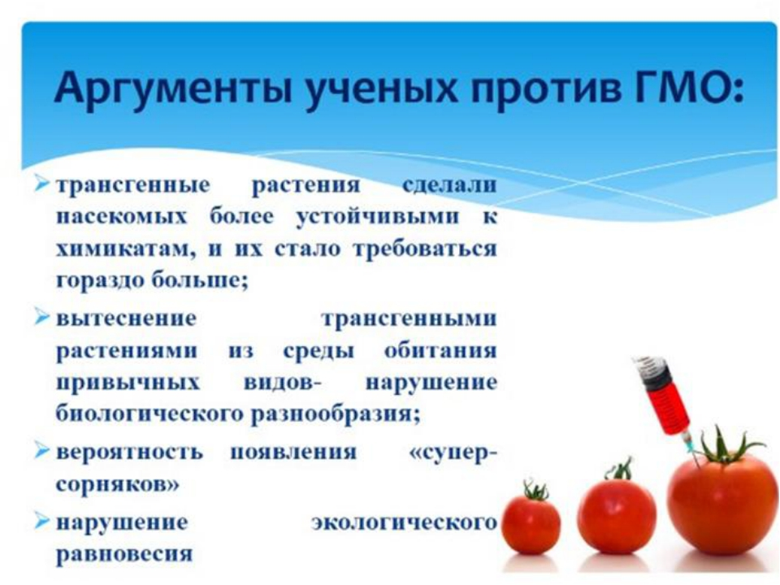

«Еда – это власть! Мы используем её, чтобы изменить поведение людей. Некоторые назовут это шантажом. Нам всё равно, извиняться мы не намерены…» Catherine Bertini
ГМО – сокращение от Генетически Модифицированные Организмы. То есть, это продукты питания, а также живые организмы, созданные при помощи генной инженерии.
Каждое растение и животное, в том числе и человек, имеет тысячи различных признаков. Например, у растений это цвет листьев, количество семян, количество и виды витаминов в плодах и т.п. За каждый признак отвечает определённый ген (греч. genos – наследственный фактор). Ген представляет маленький отрезок молекулы дезоксирибонуклеиновой кислоты (ДНК) и порождает определённый признак растения или животного. Если убрать ген, отвечающий за появление какого-нибудь признака, то исчезнет и сам признак. И напротив, если ввести новый ген, то у растения или животного возникнет новое качество. Модифицированные организмы благозвучно именуются – трансгенными, но правильнее будет называть их мутантами (лат. – изменённый).
Впервые о новых трансгенных растениях заговорили ещё в начале 80-х гг., когда в 1983 году группа учёных из американской компании «Монсанто» создала первые генетически модифицированные растения. На первоначальном этапе преследовались вполне благовидные цели: создать качественно новые растения, устойчивые, скажем, к заморозкам, засухе, вредителям, пестицидам, радиации и т.д. И уже первые опыты превзошли все ожидания: экспериментальный урожай пшеницы получился небывалым. А вредители просто избегали употребления в пищу такого лакомства. И как всегда, нашлись предприимчивые люди, которые быстро смекнули, что на новом товаре можно хорошо заработать. Уже в 1994 году изготовление суперрастений было поставлено, что называется, на поток. Так началось промышленное производство и выращивание генных мутантов. На сегодняшний день уже выведено более 2000 разновидностей всевозможных растений, которые в своей генетической структуре имеют чужеродные генетические вставки.
Важное отличие трансгенных организмов от натуральных. Они абсолютно бесплодны. То есть семена таких растений не прорастают, а животные не дают потомства. Почему же? Ведь раньше человек создавал новые сорта и породы, и всё с ними было в порядке? Причина в том, что традиционная селекция имеет одно важное ограничение: с её помощью можно получать гибриды только родственных организмов. Можно скрещивать, к примеру, разные сорта яблок, груш, породы собак, а яблоко с картофелем или помидор с рыбой – нельзя. В обычной жизни, в естественной среде обитания спаривание и скрещивание между различными видами и уж тем более классами растений или животных, как правило, не происходит.
Внедрение чуждых генов одних видов или классов в другие приводит, так сказать, к генетическому сбою, блокировке процессов размножения. Это своего рода защитный механизм сохранения видов. Или, говоря поэтично, протест природы против вмешательства в её законы.
Джеффри Смит (Jeffrey Smith) из Института Ответственных Технологий. Эксперт в области ГМО расскажет о тех опасностях, которые скрываются за продуктами, произведенными с использованием генетически-модифицированных организмов.
ГМО - очень нездоровая пищаАмериканская Академия Экологичной Медицины призывает врачей ограждать пациентов от употребления продуктов с ГМО. Они ссылаются на исследования о том, что такие продукты вредят органам, пищеварительной и иммунной системам, ускоряют процессы старения и приводят к бесплодию. Исследования человека показывают, что такие продукты могут оставлять в организме особый материал, который за длительный период вызывает множество проблем со здоровьем. Например, гены, которые внедряются в соевые бобы, могут переноситься в ДНК бактерий, которые живут внутри нас. Токсичные инсектициды, которые производит генетически-модифицированная кукуруза, попадают в кровь беременных женщин и плода.
Большое количество заболеваний появилось после того, как в 1996 году стали производить генетически-модифицированные продукты. В Америке число людей, страдающих тремя и более хроническими заболеваниями, возросло с 7 до 13 процентов всего за 9 лет. Стремительно поднялось количество пищевых аллергий и таких проблем, как аутизм, репродуктивные нарушения, проблемы с пищеварением и другие. Хотя пока не было детальных исследований, которые подтвердили, что всему виной ГМО, специалисты Академии предупреждают, что не стоит ждать, когда придут эти проблемы и следует уже сейчас защищать свое здоровье, особенно здоровье детей, которые находятся под самым большим риском.
Американская Ассоциация Здравоохранения и Американская Ассоциация Медсестер также предупреждают, что модифицированные гормоны роста жвачных животных повышают уровни гормона IGF-1 (инсулиновый фактор роста 1) в коровьем молоке, который связан с развитием рака.
ГМО все больше распространяютсяГенетически модифицированные семена постоянно распространяются по миру естественным путем. Невозможно полностью очистить наш генофонд. Самораспространяющиеся ГМО могут пережить проблемы глобального потепления и последствия, вызванные ядерными отходами. Потенциальное влияние этих организмов очень велико, так как они угрожают последующим поколениям. Распространение ГМО может вызвать экономические потери, делая уязвимыми фермеров, ведущих органическое хозяйство, которые постоянно борются за то, чтобы защитить свои урожаи.
ГМО требуют большего использования гербицидовБольшинство генетически-модифицированных культур созданы так, чтобы быть толерантными к средствам от сорняков. С 1996 по 2008 год фермеры США использовали для ГМО примерно 174 тысячи тонн гербицидов. В результате появились "суперсорняки", которые были устойчивы к химическим средствам для их уничтожения. Фермеры вынуждены использовать все большее количество гербицидов с каждым годом. Это не только вредит окружающей среде, но такие продукты, в конечном счете, накапливают в себе высокий процент токсичных химикатов, которые могут привести к бесплодию, гормональным нарушениям, порокам развития и раку.
Генная инженерия имеет опасные побочные эффектыСмешивая гены совершенно несвязанных между собой видов, генная инженерия влечет за собой массу неприятных и неожиданных последствий. Более того, вне зависимости от типов генов, которые внедряются, сам процесс создания генномодифицированного растения может привести к серьезным негативным последствиям, включая токсины, канцерогены, аллергии, нехватку питательных веществ.
Правительство закрывает глаза на опасные последствияМногие последствия ГМО для здоровья и окружающей среды игнорируются правительственными нормами и анализом безопасности. Причинами этого могут быть политические мотивы. Управление по контролю за продуктами и лекарствами США, например, не потребовала ни единого исследования, подтверждающего безопасность ГМО, не требует соответствующей маркировки продуктов и позволяет компаниям отправлять генетически-модифицированные продукты на рынки, не ставя управление в известность.
Они оправдываются тем, что не имеют информации, что ГМ продукты значительно отличаются от обычных. Однако, это ложь. Секретные записки, которые получает Управление от общественности, которая обращается в суд, показывают, что большинство ученых, работающих в управлении, согласны с тем, что ГМО могут вызывать непредсказуемые последствия, которые сложно выявить.
Биотехнологическая промышленность скрывает факты об опасности ГМОНекоторые компании, работающие с биотехнологиями, пытаются доказать, что продукты с ГМО абсолютно безвредны, используя поверхностные и фальсифицированные данные исследований. Независимые ученые уже давно опровергли эти утверждения, найдя доказательства, что дело обстоит совсем иначе. Подобным компаниям выгодно искажать и отрицать информацию о вреде ГМО, чтобы избежать проблем и остаться на плаву.
Независимые исследования и сообщения критикуются и подавляютсяУченых, которые раскрыли правду о ГМО, критикуют, заставляют молчать, им угрожают и отказывают в финансировании. Попытки средств массовой информации донести правду о проблеме до общественности подвергаются цензуре.
ГМО вредят окружающей средеГенетически модифицированные культуры и связанные с ними гербициды вредят птицам, насекомым, земноводным, морским обитателям и организмам, живущим под землей. Они снижают разнообразие видов, загрязняют воду и не являются экологически чистыми. Например, ГМ культуры вытеснили бабочек монархов, численность которых упала в США на 50 процентов.
Гербициды, как показали исследования, вызывают врождённые пороки развития у земноводных, гибель эмбрионов, нарушения эндокринных желез и повреждения органов у животных, даже в очень малых дозах. Генетически модифицированная канола (разновидность рапса) распространилась в дикую природу в Северной Дакоте и Калифорнии, угрожая тем, что может перенести гены устойчивости к гербицидам другим растениям и сорнякам.
ГМО не увеличивают урожайность и не могут помочь в борьбе с голодомПри том, что экологичные сельскохозяйственные методы без использования ГМО, которые применяются в развивающихся странах, увеличили урожайность на 79 процентов, методы с использованием ГМО в среднем не помогают увеличить урожайность совсем.
Международная организация по оценке сельскохозяйственного знания, науки и технологии развития, ссылаясь на мнение 400 ученых и поддержку 58 стран, сообщила о том, что урожайность генетически модифицированных культур "крайне изменчива" и в некоторых случаях даже начинает снижаться. Также она подтвердила, что с помощью ГМО в настоящее время невозможно бороться с голодом и бедностью, улучшить питание, здоровье и средства существования в сельской местности, защитить экологию, помочь социальному развитию.
ГМО используют те средства и ресурсы, которые можно было бы применить для разработки и использования других более безопасных методов и более надежных технологий.
Избегая продукты с ГМО, вы можете внести свой вклад, чтобы помочь избавиться от негативных последствийТак как ГМО не дают потребителю никакой пользы, многие могут отказаться от них, следовательно, производить такие продукты станет невыгодно и компании перестанут их предлагать. В Европе, например, еще в 1999 году объявили об опасности ГМО, предупредив о потенциальном вреде этих продуктов.
Живые организмы для бактерий вирусов являются средой обитания. И, попадая в животное или растение, они начинают приспосабливаться, изменять себя и окружающую среду, бороться с иммунной системой, но стараться, во что бы то ни стало выжить (это стремление любого организма, закон жизни). Поэтому те бактерии и плазмиды, что применялись для создания ГМО, никуда не деваются. По крайней мере, их часть остаётся и проникает в наш организм или в организм животных при поедании ГМ-растений. А попадая в желудок и кишечник, происходит то же самое, что и при создании ГМО – трансгенизация (видоизменение, мутация), только уже клеток стенок желудка и кишечника, а также микрофлоры пищеварительной системы.
В кишечнике расположено около 70% иммунной системы человека. Иммунитет падает, плазмиды и ГМ-вставки через кровь попадают во все органы, мышцы и даже кожу человека или животного и также производят их видоизменение. То есть, даже съедая мясо животного, которого кормили кормами с ГМО, человек заражается. Самое страшное, что это касается и половых клеток. Из половых клеток-мутантов появятся дети с генами от других видов и классов растений и животных. Большинство этих генетических «химер» к тому же будут бесплодными. К счастью, до ярко выраженных внешних проявлений этих процессов дело пока не дошло. И мы вряд ли превратимся в початок кукурузы или у нас появятся жабры.
А вот болеть от этого станем больше. И это уже началось! Люди всё чаще начали жаловаться на снижение иммунитета, у них чаще стали появляться онкологические заболевания, аллергические реакции. А ещё, как известно, именно мутации клеток создают условия для развития раковых клеток.
Вышесказанное доказывает элементарная проверка влияния ГМ-сои, устойчивой к гербициду раундапу (RR, линия 40.3.2), на лабораторных крысах и их потомстве, проведённая доктором биологических наук Ермаковой И.В. Исследование показало повышенную смертность крысят первого поколения, недоразвитость выживших крысят, патологические изменения в органах и отсутствие второго поколения. При этом подкармливали ГМ-соей только самок за две недели до спаривания, во время спаривания и лактации. При кормлении ГМ-соей не только самок, но и самцов не удалось получить даже первое поколение. В другом исследовании снижение рождаемости и уменьшение концентрации тестостерона у самцов наблюдалось у хомячков Кэмпбелла при добавлении в их корм семян ГМ-сои (линии 40.3.2).
Несколько лет назад в России бесплодным был каждый 10-й молодой человек, в настоящее время – каждый 6-й, через некоторое время – может быть каждый третий и так далее. Продукты, содержащие ГМ-компоненты, могут быть одной из причин развития бесплодия у подрастающего поколения. Уже существуют убедительные доказательства нарушения стабильности генома растения при встраивании в него чужеродного гена. Всё это может послужить причиной изменения химического состава ГМО и возникновения у него неожиданных, в том числе токсических свойств. Например, для производства пищевой добавки триптофан в США в конце 80-х гг. XX века была создана ГМH-бактерия. Однако вместе с обычным триптофаном, по невыясненной до конца причине, она стала вырабатывать этилен-бис-триптофан, вещество способное вызвать мышечные боли и спазмы дыхательных путей. В результате его употребления заболело 5 тысяч человек, из них – 37 человек умерло, 1500 стали инвалидами. Независимые эксперты утверждают, что генно-модифицированные культуры растений выделяют в 1020 раз больше токсинов, чем обычные организмы.
Сегодня в России официально разрешено к использованию 14 видов пищевой продукции, полученной с помощью трансгенных технологий: 3 линии сои, 6 линий кукурузы, 3 картофеля, 1 линия риса и ещё 1 сахарной свеклы для производства сахара.
СПИСОК МЕЖДУНАРОДНЫХ ПРОИЗВОДИТЕЙ, ЗАМЕЧЕНЫХ В ИСПОЛЬЗОВАНИИ ГМО и огромного количества химии:
Продукты, которые вас убивают, черный список:
McDonald’s , Bonduel, Фруктовый сад, пюре Rich, Coca-Cola, Pepsi, Nestle, Gallina Blanka, Knorr, Lipton, Чипсы Pringles, Приправы Maggi, 7-Up, Dr. Pepper, Cheetos, Pepsi Cherry, Mountain Dew, Minute Maid Orange, Minute Maid Grape, Real Mayonnaise (майонез), Light Mayonnaise (майонез), Low-Fat Mayonnaise (майонез), Компания-производитель Heinz : Ketchup (regular & no salt) (кетчуп), Chili Sauce (Чили соус), Heinz 57 Steak Sauce (соус к мясу). M&M's, Snickers, Milky Way, Twix, Nestle, Crunch (шоколадно-рисовые хлопья), Milk Chocolate Nestle (шоколад), Nesquik (шоколадный напиток), Cadbury (Cadbury/Hershey's), Fruit & Nut. Kit-Kat (шоколадный батончик), Kisses (конфеты), Semi-Sweet Baking Chips (печенье), Milk Chocolate Chips (печенье), Reese's Peanut Butter Cups (арахисовое масло), Special Dark (темный шоколад), Milk Chocolate (молочный шоколад), Chocolate Syrup (шоколадный сироп), Special Dark Chocolate Syrup (шоколадный сироп), Strawberry Syrop (клубничный сироп), Toblerone (шоколад, все виды), Mini Kisses (конфеты), Cracklin' Oat Bran (хлопья), Raisin Bran Crunch (хлопья), Honey Crunch Corn Flakes (хлопья), Just Right Fruit & Nut (хлопья), Nutri-grain (тосты с наполнителем, все виды), Pop Tarts (печенье с начинкой, все вкусы), All-bran Apple Cinnamon/ Blueberry (отруби со вкусом яблока, корицы, голубики), Frosted Flakes (хлопья), Corn Flakes (хлопья), Nescafe (кофе и молоко), Maggi (супы, бульоны, майонез, приправы, картофельное пюре), Nestle (шоколад), Nestea (чай), Nesquik (какао), Knorr (приправы), Lipton (чай), Brooke Bond (чай), Беседа (чай), Calve (майонез, кетчуп),Rama (масло), Пышка (маргарин), Делми (майонез, йогурт, маргарин), Альгида (мороженное), Кофе "Нескафе" (пока обширные плантации такого кофе выращивают только во Вьетнаме), Картофель (от Монсанта США).
Пельмени тоже оказались генетически модифицированы, а конкретно: «Пельмешки без спешки, свинина и говядина», «Пельмени Дарья классические», в «Бифштексах «Вкусные» из говядины» были обнаружены ГМО. Супы Campbell, Детское питание Nestle, Hipp, Danon (йогурты, кефиры, творог, детское питание), МЛ «Микояновский», Hershey (батончики Kit-Kat, шоколад), Lays чипсы, Растишка. Фабрика ’’Большевик’’ (г. Москва) — печенье ’’Юбилейное’’ в технологии приготовления используется ГМО.
При покупке продукции в магазине, по этикеткам можно косвенно определить вероятность содержания ГМО в продукте. Если на маркировке стоит отметка, что продукт произведён в США, и в его составе есть соя, кукуруза, рапс или картофель, то существует очень большой шанс, что он содержит ГМ-компоненты.
Не лучше обстоят дела и с животным миром. Так, около 50% российских местных пород основных сельскохозяйственных видов либо уже исчезли, либо находятся на грани исчезновения. Птицеводы, к примеру, навсегда потеряли одну из красивейших пород кур – павловскую. В ближайшее десятилетие под вопросом своего дальнейшего существования находится от 20% пород свиней, коз, крупного рогатого скота и до 30% пород овец. А всего в мире уже исчезло более 30% крупного рогатого скота. На американском и европейском континентах исчезают целые пчелиные семьи. Во многих регионах США эта проблема охватила почти 90% пчелиных семей. В Германии, Австрии, Испании, Польше и Швейцарии также фиксируют случаи исчезновения пчелиных семей. Манфред Гедерер, глава немецкой профессиональной федерации пчеловодов, констатирует тот факт, что в Германии пчелиные семьи уменьшились на 25%, а в некоторых регионах – даже на 80%. В Швейцарии, по официальным данным, ежегодно исчезает 25% пчёл. Потери пчелиных семей регистрировались и раньше. Однако здесь имеет место уменьшение популяции пчёл не из-за того, что они умирают. Пчёлы просто оставляют свои ульи, а назад не возвращаются. Самая вероятная причина такого поведения этих насекомых – питание пыльцой и нектаром ГМ-растений. Когда пчела заболевает, она улетает, чтобы не заразить весь улей. А это уже слишком серьёзно, ведь пчёлы – это не просто источник мёда. Пчёлы и другие опыляющие насекомые задействованы в размножении большинства растений в мире. Не будет насекомых – планета Земля быстро превратиться в пустыню. «Через четыре года после смерти последней пчелы люди тоже погибнут», – предостерегал в своё время Альберт Эйнштейн.
Как избежать употребления генетически измененных продуктов питания?Если на яйцах написано “free range” или “natural”, это может быть не более, чем маркетинговая уловка и продукт является ГМО. Итак, выбираем только продукт, на которых написано 100% organic.
Что обозначают цифры, приклеенные на фрукты и овощи:
Покупайте говядину животного, которое питалось травой (grass fed beef) – рекомендация, относящаяся в большей степени к тем читателям, которых проживают в Северной Америке.
Покупайте по возможности только местные овощи и фрукты.
Покупайте цельные продукты, а не коробки, банки, пакеты. В полуфабрикатах, консервах и пр вы имеете гораздо больше шансов получить ГМО ингредиенты даже не подозревая об этом.
Выращиваете овощи и фрукты сами. Сами-то вы вырастите нормальный урожай, а не ГМО, но при условии, если вы посадили семена не ГМО! ЕДА ДОМАШНЕГО ПРИГОТОВЛЕНИЯ, — хлеб, торты, творог и т.д., вне сомнения, гораздо полезнее для здоровья и более питательны, чем их аналоги промышленного изготовления.
ПОКУПАЙТЕ ДЛЯ СЕБЯ ПРОДУКТЫ ПИТАНИЯ ИЗ НАДЁЖНОГО ИСТОЧНИКА: Сертифицированные органические продукты имеют гораздо меньшую вероятность быть затронутыми генной инженерией. По возможности отдавайте предпочтение органическим, натуральным продуктам.
ИЗБЕГАЙТЕ ресторанов быстрого питания и низкобюджетных продуктов, поскольку генетически изменённые ингредиенты в первую очередь вводятся в более дешёвые сорта.
ХЛЕБОБУЛОЧНЫЕ ИЗДЕЛИЯ: при покупке хлебобулочных изделий, таких, как хлеб, избегайте «добавок для улучшения муки» и «вещества для пропитки теста», которые могут представлять собой смесь генетически изменённых энзимов и добавок. Подобным образом, «аскорбиновая кислота» может быть генетически изменённой производной.
ИЗБЕГАЙТЕ маргарина. Отдавайте предпочтение органическому сливочному маслу.
МОЛОЧНЫЕ ПРОДУКТЫ и мясо животных, которых кормили генетически изменёнными соей и кукурузой, не помечаются на этикетках как таковые — несмотря на свидетельства того, что изменённая ДНК может проникать через стенки кишечника в селезёнку, печень и белые кровяные клетки. По возможности отдавайте предпочтение органическому молоку, маслу, сливкам, творогу ит.п.
ШОКОЛАД может содержать лецитин из генетически изменённой сои, а также «растительный жир» и «сыворотку», затронутые генной инженерией. Поэтому отдавайте предпочтение органическому шоколаду. Весь лецитин представляет собой соевый лецитин. Его кодовый номер — Е322.
ДЕЛАЙТЕ ПОКУПКИ С ОСОБОЙ ОСТОРОЖНОСТЬЮ, когда покупаете такие продукты, как детское питание и готовые завтраки, поскольку они вполне могут содержать в виде добавок витамины и другие компоненты, полученные из генетически изменённых организмов.
ОТНОСИТЕЛЬНО ПИЩЕВЫХ ДОБАВОК ДЛЯ ЗДОРОВЬЯ, витаминов и лекарств: проверяйте у производителя, поскольку некоторые компоненты могут быть произведены с помощью биотехнологий и представлять опасность. Генетически изменённая пищевая добавка Триптофан привела к смерти 37 потребителей и сделала инвалидами ещё 1500 человек. Кроме этого, за последние 10 лет поступали сообщения о генетически изменённом варианте «человеческого инсулина», вызывающего проблемы у больных диабетом, годами успешно пользовавшихся «животным инсулином».
МЁД. В нескольких сортах меда уже были обнаружены следы ДНК генно-модифицированного масличного рапса. Если на этикетке банки мёда указано: «импортный мёд» или «производство нескольких стран», то можно посоветовать избегать таких сортов. Вместо этого отдавайте предпочтение местному меду или органическому мёду.
СУХОФРУКТЫ. Многие сорта сухофруктов, включая изюм и финики, могут быть покрыты маслом, полученным из генетически изменённой сои. Отдавайте предпочтение органическим сортам сухофруктов или сортам, на этикетке у которых не указано наличие «растительного масла».
ПРЕДУПРЕЖДЕНИЕ. Избегайте всех импортных продуктов из США и Канады. Продукты и изделия, которых следует избегать, включают все фрукты и овощи, мороженое, молоко, сухое молоко, сливочное масло, соевый соус, шоколад, попкорн, жевательную резинку,витамины. Пребывание в США и Канаде почти наверняка приведёт к регулярному потреблению генетически изменённой пищи (включая генетически изменённые свежие фрукты и овощи).
Питайтесь здоровой пищей!